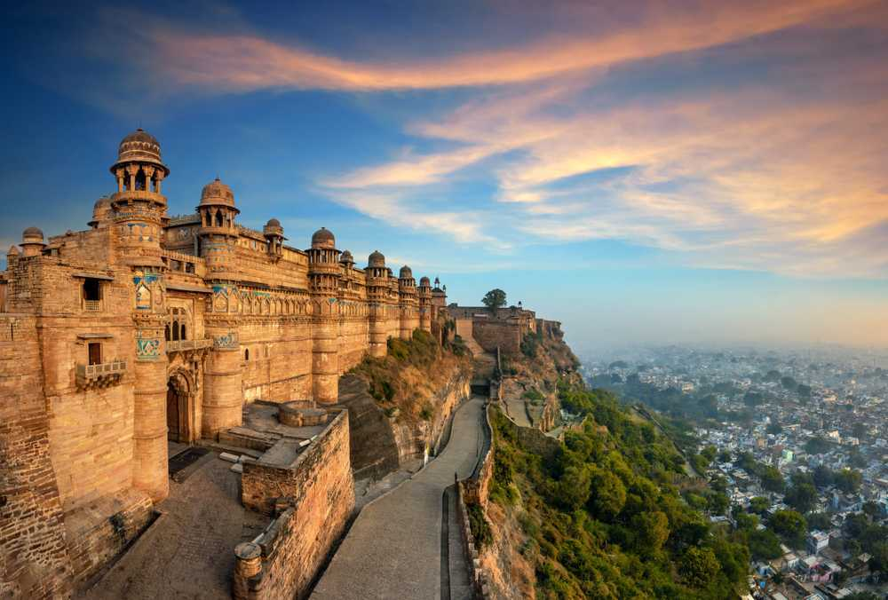

Landscapes that will take your breath away, rich history, and delicious food, your trip to Gwalior will be nothing short of unforgettable.
A city steeped in history and grandeur, captivates with its majestic forts, intricate palaces, and a rich cultural heritage...
DESTINATIONS
Unmissable Sites
Discover Foods
Food Wall
Rightly called the pearl of fortresses in India by Babur, the majestic Gwalior fort is perched on an isolated rock outcrop towering over the old city. The turquoise tessellations on the facade make it stand out even from a distance. With 6 palaces, rock-cut temples and unique architectural elements like Chinese dragons, exploring this magnificent hill fort is one of the top things to do in Gwalior. The riveting light and sound show every evening takes you through the fort’s history and must not be missed.
Famous For: Architecture
Location: Gwalior, Madhya Pradesh
Timings: 6AM to 5:30PM every day
Entry fee: INR 75/adult for Indians; INR 250/adult for foreign nationals.
